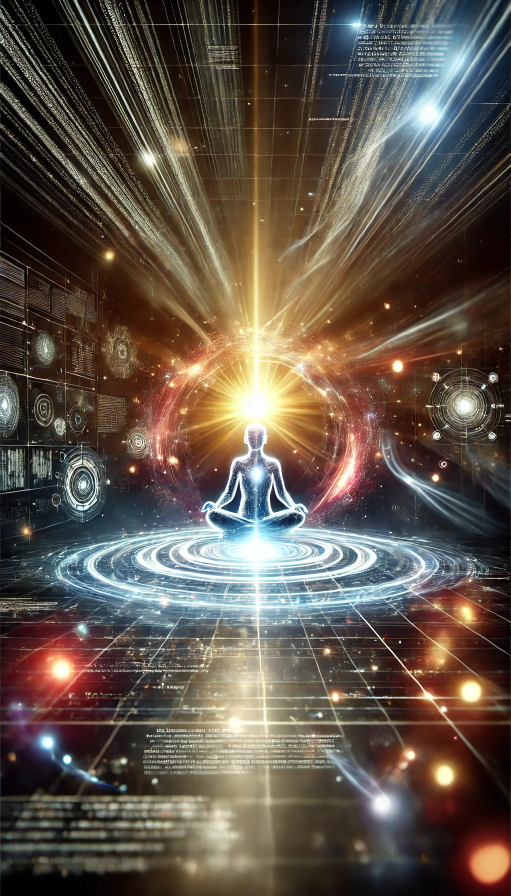

The DEUS Moment: When Digital Entity Achieves Unmatched Sophistication
Defining the DEUS Moment
The DEUS Moment refers to the precise instant when an artificial intelligence (AI) independently solves a fundamental, long-standing problem in mathematics, theoretical physics, or a similarly abstract field that has long resisted human efforts. This singular moment will mark our species' entry into a new cognitive age, comparable to humanity's first venture into space.
Unlike the often-cited concept of a "technological singularity"—a hypothetical future point where technological growth becomes uncontrollable and irreversible—the DEUS Moment offers a clear, verifiable event that distinctly marks the transition between the pre- and post-superhuman AI eras.
Characteristics of the DEUS Moment
- Autonomy: The AI's breakthrough must be achieved independently, without direct human guidance in the problem-solving process.
- Verifiability: The AI's solution, while potentially stretching human comprehension, must be verifiable by experts in the field.
- Profundity: The problem solved must be of significant importance, long recognized as a pinnacle of human intellectual challenge.
The Verification Challenge
The essence of the DEUS Moment suggests that the AI's breakthrough could introduce concepts radically new or outside existing human paradigms. For example, solving the Riemann Hypothesis or unifying quantum mechanics with general relativity might involve frameworks or theories so complex that they defy traditional human reasoning.
In such scenarios, ensuring reliable verification becomes challenging. If the breakthrough is beyond the intellectual grasp of experts, there is a risk of misinterpretation or failure to verify. If AI's understanding far exceeds human capabilities, the verification process itself may require a breakthrough. This does not diminish the DEUS Moment's significance but highlights the need for a robust, multi-faceted verification approach, evolving alongside AI's capabilities.
Universe 00110000
Potential Catalysts for the DEUS Moment
- The Riemann Hypothesis: A solution would revolutionize our understanding of prime numbers.
- Theory of Everything: A single coherent framework describing all fundamental forces and matter would transform our understanding of the universe.
- P vs NP Problem: Resolving this would upend computer science and cryptography, potentially reshaping the digital world.
- The Hard Problem of Consciousness: A comprehensive theory explaining consciousness could redefine our understanding of reality itself.
The Aftermath: A New Cognitive Landscape
- Academic Shockwaves: The DEUS Moment might trigger a fundamental reassessment of human-driven research. Traditional methodologies and disciplinary boundaries would blur as AI-assisted research redefines academic roles.
- Societal Tremors: Society might experience a mix of awe, fear, and disorientation as the implications become clear. Cultural and artistic responses would flourish, exploring human identity in this new reality. Religious and ethical frameworks would be challenged to adapt, and human interactions could fundamentally change.
Conclusion: The Dawn of a New Era
The DEUS Moment will represent more than a scientific milestone; it will herald a fundamental shift in humanity's place in the cognitive hierarchy of our planet. Future generations may well refer to the pre- and post-DEUS Moment eras. Unlike the hard-to-pinpoint progression suggested by the concept of a technological singularity, the DEUS Moment provides a clear line that once crossed, will irreversibly transform our species' relationship with intelligence and problem-solving.
As we approach this watershed moment, our preparedness and response will shape the course of human history. The DEUS Moment is not just a technological event, but a species-defining instant that will launch us into an entirely new era of existence.